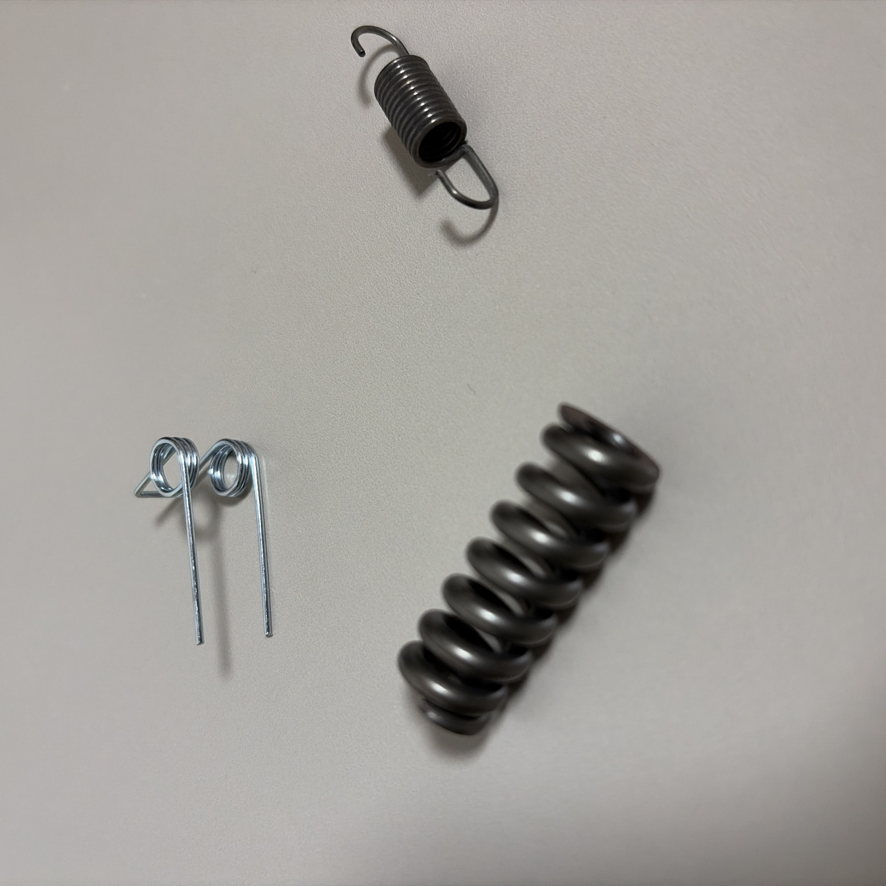

01
Project Overview
본 프로젝트에서는 실제 스프링 제조업체의 생산 현장을 방문하여 스프링의 원재료 투입부터 최종 검사까지의 제조공정을 조사하고, 각 공정에 사용되는 설비와 공정조건을 분석한다. 또한 공정별 가공조건, 생산시간, 작업방식, 공차 및 품질관리 요소를 조사하고 실제 생산현장에서 확인한 문제점을 바탕으로 제조공정의 개선 가능성을 검토한다.
02
Product Analysis
Product Overview
분석 대상은 실제 공장에서 생산되는 코일 스프링이다. 스프링은 탄성변형을 이용하여 하중을 저장하거나 충격 및 진동을 흡수하는 기계요소이며, 자동차, 산업기계, 전자제품 등 다양한 분야에서 사용된다.
| Product | Compression Coil Spring |
|---|---|
| Manufacturer | 콘트롤 스프링 |
| Material | 실제 소재 입력 |
| Wire Diameter (d) | 측정값 입력 mm |
| Mean Coil Diameter (D) | 측정값 입력 mm |
| Free Length | 측정값 입력 mm |
| Number of Coils | 측정값 입력 |
| Main Function | Elastic Energy Storage / Shock Absorption |

Product Imageimages/product.jpg'; " >
03
Factory Visit & Field Investigation
제조공정에 대한 실제 데이터를 확보하기 위해 스프링 제조업체를 직접 방문하였다. 현장에서 생산설비와 제품의 이동경로를 확인하고, 작업자 인터뷰와 직접 관찰을 통해 제조공정, 장비, 작업방법 및 공정상의 문제점을 조사하였다.


04
Manufacturing Process
실제 공장에서 확인한 생산공정을 기준으로 총 8개의 주요 제조공정을 분석한다. 아래의 공정명은 실제 공장의 공정에 맞게 수정한다.
Overall Manufacturing Flow
Wire Preparation

Process Description
스프링 제조에 사용되는 선재를 준비하고 생산설비에 공급하기 위한 단계이다. 실제 사용 소재의 종류, 선재 직경, 공급방식 등을 조사하여 작성한다.
실제 현장에서 확인한 원재료 보관 및 공급 방법을 작성.
Coiling

Process Description
스프링 선재를 코일링 머신에 공급하여 일정한 직경과 피치를 갖는 나선 형태로 성형한다. Wire feed와 tooling 조건에 따라 스프링 직경, 피치 및 전체 길이가 결정된다.
코일링 머신 종류, 작업자 역할 및 생산속도를 작성.
Heat Treatment

Process Description
성형 과정에서 발생한 잔류응력을 제거하고 스프링의 기계적 특성을 안정화하기 위해 열처리를 수행한다. 실제 공장의 처리온도와 시간을 조사하여 작성한다.
열처리 설비의 형태, 투입방법 및 공정조건을 작성.
End Grinding

Process Description
압축 스프링이 하중을 안정적으로 전달할 수 있도록 스프링 양 끝단을 연삭하여 평탄한 지지면을 형성한다. 해당 과정에서는 연삭휠과 스프링 사이의 마찰로 인해 열과 연삭분진이 발생한다.
현장 관찰 결과 연삭공정에서 많은 분진이 발생하며, 작업자의 직접적인 작업 개입이 필요한 부분이 존재하였다.
Process 05

Process Description
실제 공장에서 확인한 5번째 제조공정의 목적과 원리를 작성합니다.
공장에서 관찰한 내용을 작성.
Process 06

Process Description
실제 공장에서 확인한 6번째 제조공정에 대해 작성합니다.
실제 관찰 내용을 작성.
Process 07

Process Description
실제 공장에서 확인한 7번째 제조공정에 대해 작성합니다.
실제 관찰 내용을 작성.
Final Inspection

Process Description
완성된 제품의 치수와 성능을 검사하여 설계 및 품질 기준을 만족하는지 확인한다. 검사 결과에 따라 정상제품과 불량제품을 분류한다.
현장에서 사용되는 검사장비와 합격판정 기준을 작성.
05
Engineering Analysis
실제 제품의 치수와 공정 데이터를 이용하여 스프링 특성과 제조공정을 공학적으로 분석한다.
Spring Index
평균 코일 직경과 선경을 이용하여 Spring Index를 계산한다.
Spring Constant
제품 치수를 이용하여 이론적인 스프링 상수를 계산한다.
Production Rate
공정 Cycle Time을 기반으로 시간당 생산량을 계산한다.
Power Requirement
필요한 경우 가공력과 속도를 이용하여 요구동력을 분석한다.
Grinding Process
Grinding wheel 속도와 가공조건을 분석한다.
Process Capability
제품 치수와 허용공차를 비교하여 제조공정의 품질 수준을 분석한다.
06
Quality Control
스프링의 최종 성능은 치수뿐 아니라 하중 특성, 끝단 형상 및 표면상태 등에 의해 영향을 받는다. 실제 공장의 검사방법과 제품 품질 기준을 조사한다.
Dimensional Inspection
- Wire Diameter
- Coil Diameter
- Free Length
- Number of Coils
Load Test
- Spring Rate
- Load at Specified Height
- Permanent Deformation
End Geometry
- End Flatness
- Squareness
- Ground Surface Condition
Visual Inspection
- Surface Damage
- Crack
- Corrosion
- Coating Defect
07
Process Improvement
실제 생산현장에서 관찰한 제조공정 중 작업환경과 자동화 측면에서 개선 가능성이 있는 스프링 양단 연삭공정을 주요 개선 대상으로 선정하였다.
Observed Problem
스프링 끝단 연삭 과정에서는 연삭숫돌과 소재의 마찰로 인해 다량의 분진이 발생한다. 집진설비가 사용되고 있으나 작업자의 직접적인 작업 개입이 필요한 경우 분진 노출과 반복 작업 부담이 발생할 수 있다. 완전 자동화 설비는 이러한 문제를 줄일 수 있지만 중소 제조업체에서는 설비 투자비용이 부담이 될 수 있다.
Existing Grinding Process
- 작업자의 직접적인 제품 공급
- 반복 작업 발생
- 연삭분진 발생
- 작업환경 개선 필요
- 자동화 설비 도입 시 높은 초기비용
Low-Cost Semi-Automated System
- Spring 자동 공급장치
- Guide / Fixture를 이용한 위치결정
- 작업자 직접 접촉 감소
- 집진구조 개선
- 저비용 반자동화를 통한 생산성 향상
08
Productivity & Cost Analysis
기존 공정과 제안된 개선공정을 생산성, 작업자 개입, 품질 및 투자비 관점에서 비교한다. 실제 측정 데이터를 확보한 이후 아래 값을 수정한다.
| Item | Existing Process | Proposed Process |
|---|---|---|
| Cycle Time | 측정값 입력 | 예상값 입력 |
| Production Rate | springs/hour | springs/hour |
| Operator Intervention | High | Reduced |
| Dust Exposure | Existing Condition | Reduced |
| Process Consistency | Operator Dependent | Improved |
| Initial Investment | Low | Medium |
| Automation Level | Manual / Semi-Automatic | Semi-Automatic |
09
Project Progress
프로젝트 수행과정과 실제 조사활동을 기록한다.
Project Proposal
프로젝트 대상 제품 및 제조업체 선정.
Factory Contact
제조업체 연락 및 공장 방문 일정 협의.
Factory Visit
스프링 제조공장 방문 및 생산공정 조사.
Process Analysis
총 8개의 제조공정과 설비 및 공정조건 분석.
Progress Report
조사한 제조공정과 주요 분석 결과 정리.
Engineering Analysis
공정조건, 스프링 특성 및 생산성 계산.
Process Improvement
스프링 양단 연삭공정의 개선안 설계.
Final Presentation
최종 프로젝트 결과 발표.
Final Report
최종 보고서 제출 및 프로젝트 완료.
10
Team
유승환
역할 작성
최준석
역할 작성
전상현
역할 작성
신민선
역할 작성
11
References
- Serope Kalpakjian, Manufacturing Engineering and Technology.
- 방문 제조업체 현장조사 및 관계자 인터뷰.
- 제품 및 생산설비 제조사 기술자료.
- Spring Design 관련 기계설계 참고자료.
- 제조공정 및 연삭공정 관련 논문 및 기술자료.